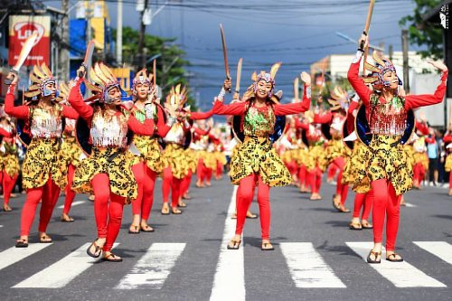

Tabaco City
Weather Summary
Currently:
High: °F
Wind Chill:
Humidity: %
Wind Speed: Mph
Three Day Forecast

Events
June 15-25: Tabak Festival
June 15-25: Mutya ng Tabak
JUne 15-25: Street Parade and other activities
Tabak Festival
traveltothephilippines.com
The Tabak Festival is an annual celebration in Tabaco, Albay in Bicol. The celebration of the said festival began in 2002. The Festival is celebrated by conducting various activities such as the street dancing competition, Mutya ng Tabak which is an annual beauty pageant, Sibidan and the Padyak Race, and various shows, fairs, trades, and exhibits. The street of Tabaco is filled with wonderful colors during the street dance competition which is participated by Tabaquenos and participants from other parts of Bicol. There is also the Karawat Bicolnon, a sports activity for the different contingents. It shows the festive spirit of Tabaquenos and Bicolanos alike. The Tabak Festival celebrates the city’s renowned craft of making the Tabak, a type of sword used mostly by farmers to cut through shrubs and other plants to clear a field or just plainly cut open a fresh coconut. The city formulated the festival to celebrate annually the its cityhood in 2003 just a year after it was granted such status. The festival focuses on the Tabak’s culture and its people’s daily lives. It aims to celebrate the spirit of the city’s community caring for each other and living harmoniously. Fittingly, the city hashtagged #cityoflove during the festivities and yes, you can see love all around. You can feel that more than competing with each other, contenders enjoy and show their best for the love of their city.